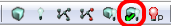
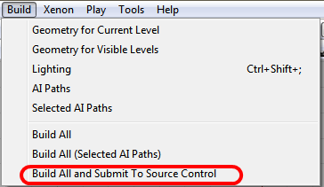
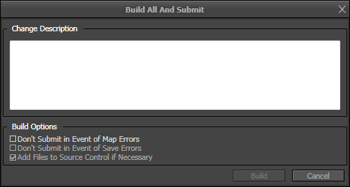

UDN
Search public documentation:
AutomatedMapBuild
日本語訳
中国翻译
한국어
Interested in the Unreal Engine?
Visit the Unreal Technology site.
Looking for jobs and company info?
Check out the Epic games site.
Questions about support via UDN?
Contact the UDN Staff
中国翻译
한국어
Interested in the Unreal Engine?
Visit the Unreal Technology site.
Looking for jobs and company info?
Check out the Epic games site.
Questions about support via UDN?
Contact the UDN Staff
Automated Map Build
Overview
Editor Dialog
Summoning the Dialog
The editor dialog can be accessed in one of two ways:- Build Toolbar Icon

- Build Menu

Using the Dialog
Changelist Description
The user is required to enter a changelist description that will be used when the maps that are built and saved are submitted to source control. In addition to what the user provides as a description, a special "[Automatic Submission]" tag will be prefixed to the description when the maps are submitted.Build Options
The user is provided with a few options that can be used to alter the behavior of the automated build:- Don't Submit in Event of Map Errors
If checked, none of the built maps will be submitted to source control if any of them result in one or more mapcheck errors.
- Don't Submit in Event of Save Errors
If checked, none of the built maps will be submitted to source control if any of them fail to save for whatever reason.
- Add Files to Source Control if Necessary
If checked, any of the built maps not already in the source control depot will be added automatically as part of the submission process.
Dialog Build Behavior
Once the user clicks "Build," the dialog will check that each map file is valid for building and if so, begin the process of a total build with production-level lighting. The preparation process checks to make sure that all of the maps already have files associated with them (i.e. none of them are "new" maps) and that each map is capable of being checked out of source control, or if not already in the source control depot, that the file is not read-only. In the event of a preparation error, the user will be immediately prompted on whether or not the build should proceed. As an example, suppose a user is attempting to build a map with three sub-levels but another user has one of the sub-levels exclusively checked out. The dialog will warn that the particular file cannot be checked out from source control. From that point, the user can opt to proceed with or cancel the build. If the user proceeds, the build will still factor in all of the levels, but the level that couldn't be checked out will not be saved or submitted to source control. Keep in mind that continuing in this manner will result in a partially built map being submitted to source control. Once a build completes successfully, the dialog will save all of the relevant files and submit all of the files that it is capable of to the source control depot.Command Line Invocation
Command Line Usage
To specify an automated build, the user must specify the normal editor command line argument as well as a map name and two special automated build parameters:- -AutomatedMapBuild
This is the special parameter required to signal to the editor that an automated build has been requested.
- CLDesc="Changelist Description Here!"
Note the usage of a quoted string to allow for spaces within the changelist description. If this parameter is omitted, the build will immediately fail during build preparation.
editor DM-Deck -AutomatedMapBuild CLDesc="Rebuilding DM-Deck"
Optional Command Line Arguments
The behavior of the command line automated build can be configured by providing additional arguments:- IgnoreBuildErrors=TRUE/FALSE
- Description: Specifies whether mapcheck errors generated by building the maps should prevent submission or not. If set to FALSE, if any of the maps generate a mapcheck error, none of them will be submitted.
- Default Behavior: Ignored; Build errors are ignored by default as they are usually not serious enough to prevent a submission.
- IgnoreSCCErrors=TRUE/FALSE
- Description: Specifies whether errors resulting from being unable to check out a map file (potentially checked out by someone else) should prevent submission or not. If set to FALSE, if any of the maps can't be checked out or written to for any reason, none of them will be submitted.
- Default Behavior: Build Abortion; Source control errors usually result in partial builds, so they default to aborting the build by default.
- IgnoreMapSaveErrors=TRUE/FALSE
- Description: Specifies whether being unable to properly save a map file should prevent submission or not. If set to FALSE, if any of the maps can't be saved correctly for some reason, none of them will be submitted.
- Default Behavior: Build Abortion; Save errors usually indicate something has gone quite wrong, so they default to aborting the build process.
- AddFilesNotInDepot=TRUE/FALSE
- Description: Specifies whether map files that aren't already in the source control depot should be added to the depot as part of the automated build.
- Default Behavior: FALSE; By default, map files not already in the depot are not added to the depot by the automated build.